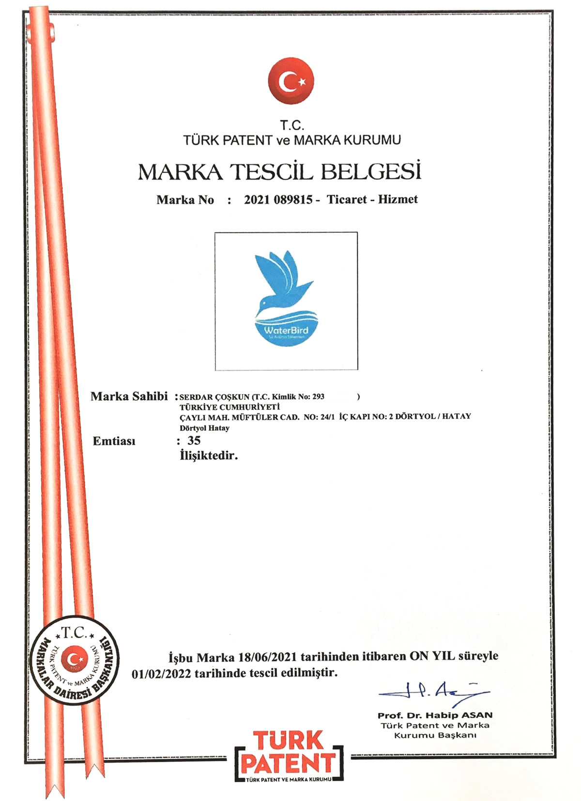
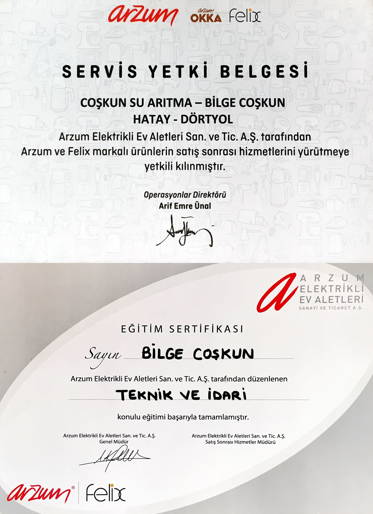
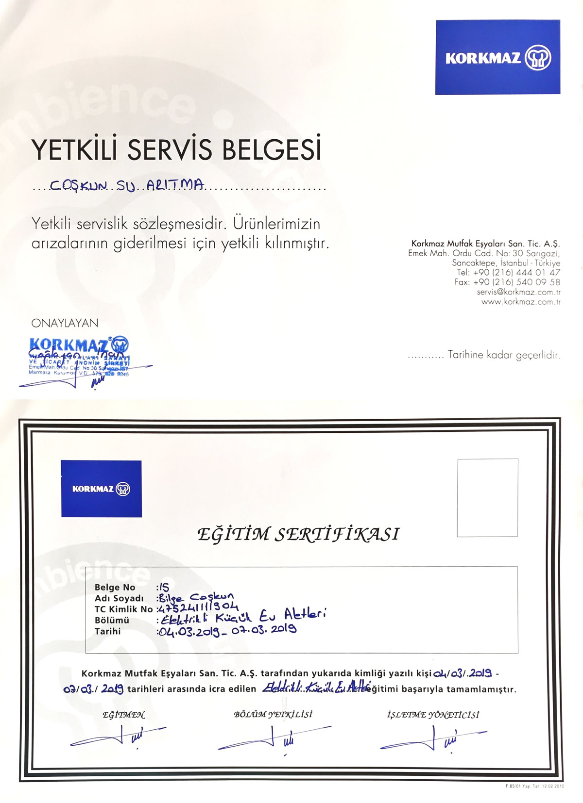
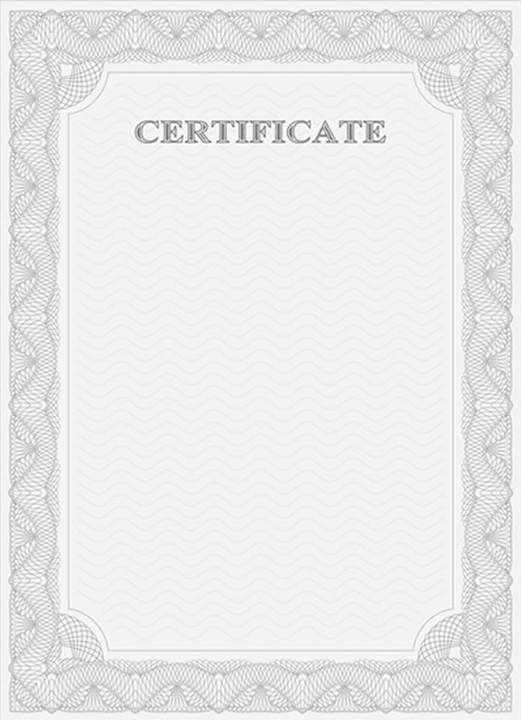

Hakkımızda
Vizyon & Misyon
Su arıtma ve küçük ev aletleri sektöründe 2015 yılından bugüne kalite anlayışımızı her zaman benimseyerek yanınızda olmaya devam ediyoruz.
Biz kimiz?
Coşkun Su Arıtma; Dörtyol/Hatay’da bulunan, alanında uzman kadrosuyla evsel ve endüstriyel ters osmoz su arıtma sistemleri, küçük ev aletleri satışı ve teknik servis faaliyetlerinde bulunan bir firmadır.
-
Vizyonumuz
Müşterilerimizin beklentileri doğrultusunda ihtiyaçlarına uygun yüksek kalite standartlarında ürün ve hizmet sunmak. Faaliyet alanlarımızda sürdürülebilir bir büyüme sağlayarak sektörde öncü bir kuruluş olmayı amaçlamaktır.
-
Misyonumuz
Ürün ve hizmet kalitesinden taviz vermeden müşteri memnuniyetini en üst seviyede tutarak topluma ve çevreye pozitif katkı sağlayan, faaliyetlerinden elde ettiği başarılar ile hedeflerini her geçen gün yükseltip, daha geniş kitlelere hizmet sunmak.
Gerçekleştirdiğimiz her aktivitenin temelinde, tanımlanmış marka değerlerimiz yatar. Üstlendiğimiz projelerde, bu değerlerin göz ardı edilmemesi gerektiğini bilir ve buna göre çalışırız. Değerlerimize bağlı çalıştığımızda, hizmet sağladığımız sektörde, daha fazla başarıya ulaşacağımızı biliriz.
Video
Ters Osmoz
Ters osmoz çalışma mantığı hakkında açıklayıcı animasyon.
HİZMETLERİMİZ
Satış ve Teknik Destek
Su Arıtma Sistemleri
Ev ve iş yerleri için ihtiyaçlara uygun su arıtma cihazlarının satışı ve montajı.
Periyodik Bakım
Su arıtma cihazlarının tüketilen su miktarına göre periyodik bakımı, su analizi ve filtre değişimi.
Yedek Parça
Ortak markalarımız dahilinde satışını yaptığımız her türlü ürün için yedek parça temini.
Garanti İşlemi
Kendi markalarımız ve ortaklarımızın ürünlerini garanti kapsamında veya dışında destek sağlanması.
Keşif
Su arıtma cihazları ve servis sağlama uygulamalarında projelendirmenin yapılabilmesi ve nihai fiyatlandırmanın müşteriye arz edilmesi.
Portföy
Fotoğraf Galerisi
- TÜMÜ
- MAĞAZA
- SU ARITMA
{kind=link}
{kind=link}
{kind=link}
{kind=link}
{kind=link}
{kind=link}
{kind=link}
{kind=link}
{kind=link}
Personel
Çalışma Arkadaşlarımız
Profesyonel ekibimiz 20 yıldan fazla tecrübe ve çözüm odaklı çalışması ile müşteri memnuniyetini en üst düzeye çıkartmayı hedef olarak benimsemiştir.
Serdar Coşkun
Yönetici | Firma Yetkilisi...
Müşteri Temsilcisi...
Teknisyen...
TeknisyenBELGELERİMİZ
Sertifika ve Belgeler
Patent, Marka Tescil ve Yetki Belgelerimiz.
WaterBird Marka Tescil Belgesi
Arzum | Felix Yetki Belgesi
Korkmaz Yetki Belgesi
A. O. Smith Yetki Belgesi
S.S.S.
Sıkça Sorulan Sorular
Sıkça karşılaştığımız soruları sizin için derleyip faydalı bilgiler halinde birleştirdik.
-
Ters osmoz nedir?
Ters ozmoz iyonları, istenmeyen molekülleri ve içme suyundan daha büyük parçacıkları gidermek için kısmen geçirgen membran kullanan bir su arıtma işlemidir.
-
Sediment filtre nedir?
Sediment filtreler, ters osmoz cihazlarının girişine takılan sıkıştırılmış kağıttan üretilen ilk aşama filtredir. Sudaki çamur, pas ve kum gibi partiküllerin sisteme girişini engellemek için kullanılanılırlar.
-
Aktif karbon nedir?
Aktif karbonun yaygın uygulama alanı, suyun içinde mevcut organik madde, renk, koku, tat ve klor giderimidir. Ancak burada, sözkonusu olan sadece fiziksel bir süzme işlemi değildir. Aktif karbon sistemler, fiziko-kimyasal arıtma yapan sistemlerdir ve suyun arıtılması esnasında adsorpsiyon mekanizması işlemektedir. Aktif karbon kömürümsü ancak çok geniş yüzey alanına (1000-1500 m2/gr) sahip bir malzemedir. Organik kirliliğin olduğu sularda ve klor giderme amacıyla yaygın olarak kullanılmaktadır.
-
Membran filtre nedir?
Ters osmoz su arıtma cihazlarının en önemli filtresi Membran filtredir. Milimetrenin on milyonda biri kadar küçük gözeneklere sahip olması ile yarı geçirgen zar şeklinde bir filtredir. Musluktan gelen suyun molekül düzeyinde ayrıştırılma işlemi ile suyun sertliğini düzenler. Ayrıca suyu içerisinde bulunan kirletici (Kurşun, Krom, Baryum, Civa, Kadminyum, Sodyum, Florür, Nitrat, Nitrit, Selenyum) maddelerden arındırır.
-
Alkali su nedir?
Suda bulunan hidrojen ve hidroksit iyonları miktarı, suyun asidik ya da alkali özelliğini ortaya koyar. Örneğin; sudaki hidrojen iyonu fazlaysa su asidik, hidroksit iyonu fazlaysa alkali su olarak bilinmelidir. Bununla birlikte bilinmesi gereken diğer bir bilgi ise suyun pH değeri 7 seviyesinin altındaysa aynı şekilde su asidik, 7 seviyesindeyse nötr ve 7’nin üzerindeki değerlerdeyse alkali su olarak bilinir.
-
Suyun pH değeri ne anlama gelmektedir?
pH, bir çözeltinin asitlik veya bazlık derecesini tarif eden ölçü birimidir. Açılımı "Power of Hydrogen"(Hidrojenin Gücü veya Potansiyel Hidrojen) olarakta adlandırılabilir.
Suyun pH derecesi de 0’dan 14’e kadar olan değerleri almaktadır. 0 – 7 arası asidik, 7 nötr ve 7 – 14 arası alkali su olarak adlandırılmaktadır. Saf suyun pH derecesi 7’dir. Suyun asidik özellik göstermesi içeriğinde fazladan karbondioksit bulunması, alkali özelliği göstermesi ise fazladan kalsiyum bikarbonat ve alkali tuzları içerdiği anlamına gelmektedir. Ayrıca içeriğinde potasyum, kalsiyum ve magnezyum bulunması suyun asitlik derecesini düşürmektedir. Hafif alkali sular, insan sağlığı açısından daha verimli ve faydalıdır.
-
Filtreler hangi zaman aralıkları ile değişmelidir?
Su kalitesi ve kullanıma bağlı olarak değişkenlik göstermekle birlikte ortalama verilerde sistem ön filtreleri yılda iki kere, son filtre yılda bir defa ve membranın ise ortalama 2-3 yılda bir değişmesi tavsiye edilmektedir. Ancak bu süreler şebeke suyunun kalitesine göre değişkendlik gösterebilmekteir.
-
Tezgahı delmek yerine çift başlıklı musluk kullanabilir miyiz?
Cihaz kutusu içerisinde 1 adet arıtma musluğu bulunuyor. Ancak tezgahın delinmesi istenmiyor ise ek ücretle farklı bir musluk tedarik edilebilir.
-
Su arıtma sistemi sudaki iyi mineralleri de alır mı?
Ters osmoz sistemlerinin amacı sudan zararlı etmenlerin alınmasıdır. Çalışma prensibi olarak bir su arıtma cihazının sudaki maddeleri zararlı ve yararlı diye ayırması mümkün değildir, sudan tüm bakteri, virüs, tortu, klor gibi kirletici unsurları ve mineralleri almaktadır. Eğer vücudumuzun ihtiyacı olan tüm mineralleri sudan karşılamak istersek günde litrelerce su içmemiz gerekir. Bu nedenle yaygın bilinenin aksine vücudumuz gerekli mineralleri besinlerden almaktadır.
-
Su, yaz ve kış mevsimlerinde aynı karakterde midir?
Su sıcaklığı ile çözünürlük doğrudan ilişkilidir. Normal durumda, iletkenliğin doğal kaynak sularındaki gibi düşük değerlerde olduğunda, 10 derecelik değişim, besleme suyu için kritik bir önemi olmayacaktır. Ancak, suyun tuzluluk değeri yüksek ise sıcaklık o zaman önemlidir.
-
Su arıtma cihazım su sızdırıyor ne yapmalıyım?
Su sızıntısını önlemek için su arıtma cihazına ait su giriş küresel vanasını kapalı konuma getirdikten sonra teknik personelimiz ile iletişime geçiniz.
-
Su arıtmadan çıkan suyun tadı neden kötü?
Su arıtma cihazları kullanıma göre belirli periyodlar aralığında kontrol edilirler, suyun tadının kötü olması filtrelerin değişim süresinin geldiğini göstermektedir.
İLETİŞİM
Bize Ulaşın
Bizimle irtibat kurabilmek için aşağıdaki iletişim yollarından herhangi birini kullanabilirsiniz.
Adres
Sanayi, Telli Sokak, No: 13, 31600
Dörtyol/HATAY
E-Posta
@dörtyolsuarıtma.com.tr
.
Telefon
+90 542 385 7242
+90 553 985 4100